Join us for Connect(); 2015 to hear directly from Scott Guthrie, Brian Harry, and Scott Hanselman on what's next in this exciting journey. Get deeper insights into our exciting announcements with over 80 on-demand sessions. Interact with the engineering team members behind Microsoft tools and technologies to help you get started.
Getting started with HockeyApp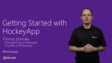[MP4] [0:15:35] [2016/03/10]Getting started with HockeyApp is simple, and creating an account is free. Login with your Microsoft Account or one of your social media accounts and you are set. Once your account is setup, you…
Incredibuild with Visual Studio 2015 Update 1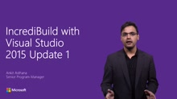[MP4] [0:04:35] [2015/11/30]Provides an overview on the collaboration between Microsoft Visual Studio and Xoreax Incredibuild which is aimed at improving overall end-end build times for developers.
What is IncrediBuild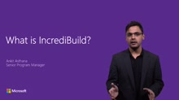[MP4] [0:07:45] [2015/11/30]Provides an overview on Incredibuild, a software acceleration technology used by many to speed up development processes.
Connect (); //Scott Guthrie Unplugged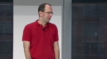[MP4] [0:53:31] [2015/11/28]Watch Scott Guthrie address questions from the Connect(); //2015 attendees in an open mic session.
Visual Studio Team Services: The Inside Story from Box to Cloud[MP4] [1:03:01] [2015/11/28]In 2010, Microsoft's Developer Division began Visual Studio Team Services, the Software-As-A-Service (SaaS) offering based on Team Foundation Server. This is the story of moving a traditional software…
The Future of Software Development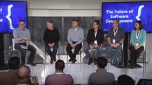[MP4] [1:00:34] [2015/11/28]Join Dan Fernandez, Anders Hejlsberg, Scott Hunter, Rob Lefferts, Julia Liuson and Larry Rau (Verizon) to discuss the future of software development and the evolution of the developer role, the…
Creating Products in the open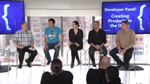[MP4] [0:58:34] [2015/11/26]Join Martin Woodward, Jay Schmelzer, Erich Gamma, Amanda Silver and Patrick Chanezon (Docker) in a discussion about the lessons they learned when creating products in the open. How did they tackle the…
Microsoft Technology Company Teams Up with Super Survivor Kids to Beat the Odds[MP4] [0:01:44] [2015/11/25]The odds of beating cancer for pediatric patients are good, but these strong, young survivors often have life-long healthcare concerns that must be monitored and addressed. After watching patients…
Medical Workers Team Up with an Australian Software Company to Save Lives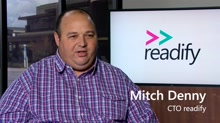[MP4] [0:01:48] [2015/11/25]Adult Retrieval Victoria (ARV) coordinates major trauma situations for Ambulance Victoria, but the vital service was in need of some help of its own in the form of better decision support to manage…
Hospital System Brings Patient Data Together for Secure Access Across Multiple Locations[MP4] [0:01:38] [2015/11/25]The Maine Medical Center Imaging Informatics development team focuses on improving patient care by managing their records data and making them available while ensuring patient privacy. As Maine…
Cloud Solution for PostNL Reduces Costs for IT and Services[MP4] [0:01:19] [2015/11/25]With paper mail volume decreasing every year, the Netherland's national postal service, PostNL, had to get creative and push for innovating the way they do business. Making adjustments to use more…
Rich User Experience Keeps Apps Healthy at Boston Heart Diagnostics[MP4] [0:01:28] [2015/11/25]Boston Heart Diagnostics is a laboratory that specializes in cardiovascular heart disease testing. Telerik has been working with Boston Heart for the last three years to help develop a world-class…
Novarum DX Transforms Global Health Initiatives using Native Xamarin Apps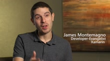[MP4] [0:01:33] [2015/11/25]Novarum DX wanted frontline medical responders around the world to have life-saving diagnostic test results at their fingertips and in their pockets. Using the Xamarin platform, Novarum was able to…
Industry Leader Uses Continuous Delivery Pipeline to Transform How They Deliver Value to Customers[MP4] [0:01:57] [2015/11/25]Northwestern Mutual has been helping achieve financial security for nearly 160 years. In order to continue to offer the same efficient service and solid security that has earned them 4.3 million…
Verizon Labs powers FiOS entertainment services with open source .NET Core, Docker and Apache Mesos[MP4] [0:01:37] [2015/11/23]The Verizon Labs engineering team powers the FiOS entertainment services. They built a scalable architecture that works across many platforms and devices. The FiOS application was developed with open…
Connect(); 2015 Keynote Highlights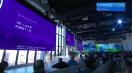[MP4] [0:02:24] [2015/11/20]Take this whirlwind tour to get caught up on all the key announcements that were made at Connect(); 2015. You'll hear what's new in topics such as ASP.NET 5, .NET, Office, Azure, Application Lifecycle…
Scott Guthrie, Anders Hejlsberg and Jules Kremer from Google talk & demo VS Code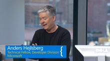[MP4] [0:13:46] [2015/11/20]In this video Anders Hejlsberg joins Scott Guthrie on stage to deliver a demo of Visual Studio Code with TypeScript support. You'll also see our guest, Jules Kremer from Google who shares her…
Building apps for iOS with Visual Studio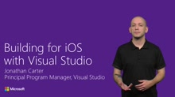[MP4] [0:04:02] [2015/11/20]Building an app for iOS? No matter how you're building it, you might surprised by what Microsoft offers to support you.
Visual Studio Code, now open source, with extensibility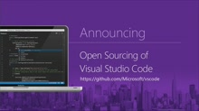[MP4] [0:03:50] [2015/11/20]In this video you'll see Scott Guthrie make an exciting announcement that Visual Studio Code is now open source! Scott is then joined on stage by Erich Gamma, who pushed the "open source"…
ASP.NET 5 & .NET Core (RC) announcement & Scott Hanselman demos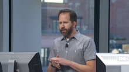[MP4] [0:12:56] [2015/11/20]Watch this excerpt from the Connect(); Day 1 keynote, in this video you'll see Scott Hanselman demo ASP.NET 5 and its tooling in Visual Studio 2015, you'll also see Scott Guthrie announce that ASP.NET…
Verizon team demo's Verizon labs built on ASP.NET 5 and .NET Core[MP4] [0:11:04] [2015/11/20]In this video guest speakers Syed Ammar Ahmad and Senthil Raghavan from Verizon will demo some of the things they are developing at Verizon labs. They will start with an overview of the Verizon cloud…
Scott Hanselmans best demo! IoT, Azure, Machine Learning & more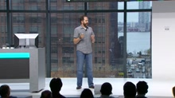[MP4] [0:14:30] [2015/11/20]In this video Scott Hanselman delivers one of the best and personal demos, he'll show you how a combined solution using technologies such as IoT devices, cloud platforms, Machine Learning and Office…
Manage your technical debt with TFS, Visual Studio Team Services, Visual Studio, and SonarQube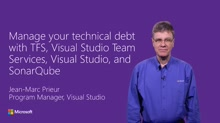[MP4] [0:10:18] [2015/11/19]By using Visual Studio, Team Foundation Server and Visual Studio Team Services, and their integration with SonarQube, you now have a way to measure technical debt, stop it from growing, and manage it…
Guatemala startup MediCloud.me brings electronic health records to Latin America with Microsoft Azure[MP4] [0:02:08] [2015/11/18]Microsoft BizSpark startup MediCloud.me is a cloud-based electronic health record on Azure that is free for doctors and clinics throughout Latin America. Developed with Visual Studio Team Services and…
Optolexia builds dyslexia screening tool using Microsoft Azure Machine Learning[MP4] [0:02:05] [2015/11/18]Optolexia, founded by researchers at Karolinska Institutet in Stockholm, Sweden, built a dyslexia screening tool for young children. Using a repository of eye-tracking data and an analytical engine…
The Sela Canada My Baby and Me Passport cross-platform application with Visual Studio and Xamarin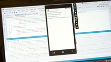[MP4] [0:01:46] [2015/11/18]Sela Canada developed a health record application for pregnant homeless or marginally housed women. The project was proposed and sponsored by two St Michael's Hospital social workers to help educate…
GOJO, the inventors of PURELL, measures hand hygiene compliance through Microsoft Azure IoT services [MP4] [0:02:13] [2015/11/18]The GOJO SMARTLINK engineering team developed an Azure Internet of Things application that monitors PURELL hand sanitizer usage in hospitals to track hand hygiene compliance to help prevent hospital…
Google engineers from Angular core development team are building Angular 2 with TypeScript [MP4] [0:02:24] [2015/11/18]Angular is a JavaScript development framework that is an open source project from Google built in collaboration with Microsoft. Angular 2 is built with Typescript, which is an open source language…
Intel Labs collaborated with Dr. Stephen Hawking on .NET-based assistive technology solution[MP4] [0:02:07] [2015/11/18]Dr. Stephen Hawking has ALS (amyotrophic lateral sclerosis) and has relied on assistive technology. Researchers from Intel Labs collaborated with Hawking on a new solution called ACAT (Assistive…
Developing custom visuals for Microsoft Power BI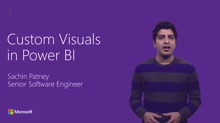[MP4] [0:07:15] [2015/11/18]Sachin walks you through how to build a custom visual for Power BI
Mobile DevOps with Visual Studio Team Services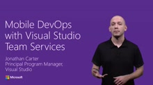[MP4] [0:06:46] [2015/11/18]Setting up a CI environment for your mobile apps should be easy, regardless how they are built and/or which platforms they target. This video demonstrates how Visual Studio Team Services makes it…
Introduction to U-SQL for Developers: Big Data Processing Made Easy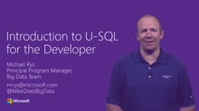[MP4] [0:24:50] [2015/11/18]The new Azure Data Lake Analytics service introduces a Query Language called U-SQL to efficiently and easily process large amounts of data. This video introduces U-SQL, focusing on its integration of…
Process customization in Visual Studio Team Services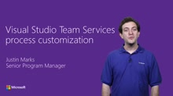[MP4] [0:04:28] [2015/11/18]Teams of all sizes expect their tools to adapt to their organization's process and culture. Work items customization allows customers to make the project management experience your own. This video…
Building apps for Android with Visual Studio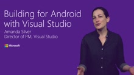[MP4] [0:03:45] [2015/11/18]Building an app for Android? No matter how you're building it, you might be surprised by what Microsoft offers to support you.
Introduction to Azure IoT Suite and IoT Hub for developers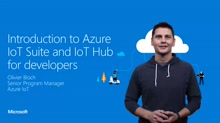[MP4] [0:16:56] [2015/11/18]Azure IoT Suite and the Azure IoT services enable you to easily connect devices to the Cloud to not only make the most out of telemetry data generated by millions of devices, but also to take action…
Building secure mobile apps with the InTune SDK and Xamarin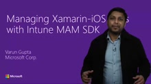[MP4] [0:11:39] [2015/11/18]How can you protect sensitive data for enterprise mobile apps running on employee owned devices? Microsoft's Enterprise Mobility Suite adds support for custom apps with the release of their Intune App…
Visual Studio Team Services Code Search 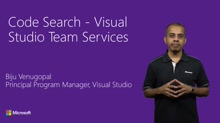[MP4] [0:07:20] [2015/11/18]Code Search delivers a one-stop shop for all of your code exploration and troubleshooting needs. Search for code across TFVC and Git projects in your Visual Studio Team Services account. From…
Visual Studio Code Extensions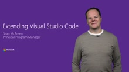[MP4] [0:19:05] [2015/11/18]Visual Studio Code now supports extension! In this session we'll show you how easy it is to add to the core functionality by creating an extension (a spell checker for Markdown). We will edit, run…
Integrating Microsoft Identit(ies) into your applications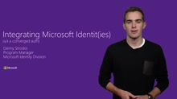[MP4] [0:11:51] [2015/11/18]In the past, app developers who wanted to support both personal Microsoft accounts and work accounts from Azure AD had to integrate with two disparate stacks. We're bringing these two together and are…
Office Graph (Developer Preview)[MP4] [0:10:28] [2015/11/18]The Office Graph is the intelligence fabric powering Office 365 applications. You can leverage the machine learning insights from Office Graph to build your own productivity apps and cloud solutions. …
Excel REST API (Public preview)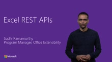[MP4] [0:06:18] [2015/11/18]This video introduces the new Excel REST APIs (public preview) that are being released as part of Microsoft Graph APIs. These APIs enable you to develop applications that read and modify data in an…
How and Where to Acquire Apps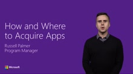[MP4] [0:07:44] [2015/11/18]This video shows how to find and use Office add-ins for Word, Excel, PowerPoint, and Outlook, as well as Office Online in the browser through Office 365 and the Office Store. Office add-ins are a…
Office 365 Tasks API (Public Preview)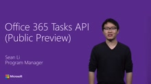[MP4] [0:12:18] [2015/11/18]This video introduces the all-new Office 365 Tasks API (Public Preview). Tasks are at the center of how people work and collaborate in a team. Learn about what you can build with the API, how it works…
Word JavaScript add-in APIs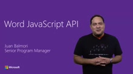[MP4] [0:20:58] [2015/11/18]In this video, you'll get an introduction to the main functional areas exposed in the Word JavaScript API. Juan will guide you through a demo to visualize the type of solutions you can code for Word…
Excel JavaScript add-in APIs[MP4] [0:06:21] [2015/11/18]Office 2016 introduced hundreds of new JavaScript APIs to Excel, empowering Office Add-ins with rich extended functionalities and significantly improved performance. The new APIs offer a simple and…
People REST API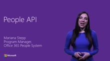[MP4] [0:08:49] [2015/11/18]The People API provides browse, fuzzy search, and dynamic ranking capability of people who are most relevant to the user. The API returns unified person entities rather than disconnected contacts and…
SDKs and Tooling for Microsoft Graph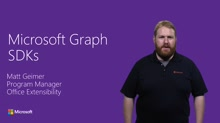[MP4] [0:05:42] [2015/11/18]This video provides an overview of the Microsoft Graph SDKs and how they are generated, including a demo for the generating a SDK for the beta endpoint on the Microsoft Graph using the VIPR tool. The…
Microsoft Graph (/beta)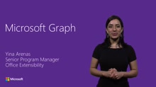[MP4] [0:11:59] [2015/11/18]The Microsoft Graph exposes intelligent insights that Microsoft builds in the cloud, by bringing together smart machine learning algorithms with a wealth of data and user behavior. Using the Microsoft…
Microsoft Graph (/v1.0)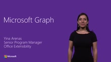[MP4] [0:11:04] [2015/11/18]The Microsoft Graph exposes intelligent insights that Microsoft builds in the cloud, by bringing together smart machine learning algorithms with a wealth of data and user behavior. Using the Microsoft…
Introducing Visual Studio Dev Essentials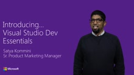[MP4] [0:07:43] [2015/11/18]Visual Studio Dev Essentials is a new free developer offering from Microsoft. A free membership to this program gives you access to a range of benefits including developer tools and services, training…
What's new in TypeScript[MP4] [0:12:07] [2015/11/18]In this video, Bill Ticehurst demonstrates some of the new developments in TypeScript, including better editor support, improvements when working with dynamic JavaScript code patterns, richer module…
Visual Studio Emulator for Android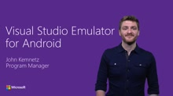[MP4] [0:05:55] [2015/11/18]Make deploying, testing, and debugging your Android apps a breeze with our fast, free, best-of-breed Android emulator. Experience first-class integration with Visual Studio 2015 or work in Java with…
Dynamically updating your Cordova and React Native apps using CodePush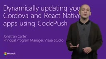[MP4] [0:07:35] [2015/11/18]CodePush is a cloud service that enables Cordova and React Native developers to deploy mobile app updates directly to their users' devices. This video demonstrates the capabilities of the service, how…
Microsofts Mobile Application Development Platform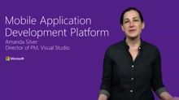[MP4] [0:03:19] [2015/11/18]We live in a mobile-first, cloud-first world where employees can achieve more and business can engage with their customers via connected experiences. Microsoft offers a comprehensive mobile…
Visual Studio GDB Debugger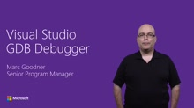[MP4] [0:12:02] [2015/11/18]We are introducing the Visual Studio GDB Debugger that connects the Visual Studio debugger to the GNU Project debugger. This is useful for debugging binaries built with GCC, including remote Linux…
Visual Studio 2015 Update 1 improvements for native cross-platform devs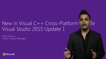[MP4] [0:07:04] [2015/11/18]When you need a fast uncompromising user experience for your app, native development is the way to go. In Visual Studio 2015 Update 1 we have introduced a variety of improvements for developing apps…
Getting started developing with Docker and Azure Container Service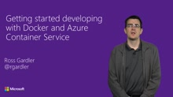[MP4] [0:10:28] [2015/11/18]Azure Container Service is a new service that provides a managed cluster of Docker hosts on which you can deploy your applications. This short video shows how a developer might build and test an…
Upgrading & Monitoring your Service Fabric Application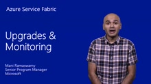[MP4] [0:13:50] [2015/11/18]Service Fabric offers powerful management and monitoring capabilities including zero-downtime upgrades and deep diagnostics of your cloud service. In this video, Mani Ramaswamy shows how a Service…
Deploying your application to Service Fabric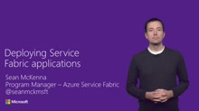[MP4] [0:09:14] [2015/11/18]Service Fabric provides operational tools that span from a local development cluster to a large multi-machine deployment in Azure. In this video, Sean McKenna shows how to use some of those tools to…
Building your first Service Fabric application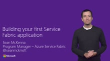[MP4] [0:07:56] [2015/11/18]Service Fabric provides a rich local development experience. In this video, Sean McKenna walks through creating a simple application in Visual Studio and deploying it to a local cluster. He then shows…
Introduction to Microservices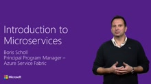[MP4] [0:13:46] [2015/11/18]Service Fabric is a platform for building reliable, hyperscale, microservice-based applications. In this video, Boris Scholl provides an introduction to the characteristics of microservices and talks…
What's new in Azure Redis Cache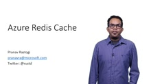[MP4] [0:13:54] [2015/11/18]Azure Redis Cache is based on the popular open-source Redis. Redis gives you high throughput, consistent low-latency data access to power fast, scalable Azure applications. In this video we will take…
What's New in App Service Logic Apps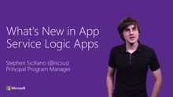[MP4] [0:06:56] [2015/11/18]App Service Logic Apps make it easy to automate any processes without writing code. They can integrate disparate data sources, from cloud to on-premises. In this video we will cover the recent…
What's New in App Service API Apps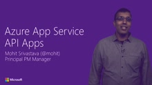[MP4] [0:11:06] [2015/11/18]App Service API Apps makes it easy to build & consume APIs in the cloud. In this video, we'll walk through the full lifecycle of creating and publishing an API. We'll highlight authentication,…
Enterprise Mobile Apps with Azure App Service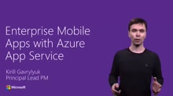[MP4] [0:13:08] [2015/11/18]Employee apps need enterprise single-sign on, push notifications, and access to existing enterprise systems on premises. Learn how to use built-in Mobile backend capabilities in Azure App Service for…
Get your idea to the Cloud with Web Apps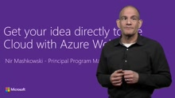[MP4] [0:08:18] [2015/11/18]Azure App Service Web Apps and Visual Studio provide a powerful yet easy-to-use integration for building, scaling and maintaining applications in the cloud. In this video, Nir Mashkowski will work…
Cortana Analytics: Building a recommendations model in 5 minutes![MP4] [0:10:58] [2015/11/18]The Cortana Analytics Gallery gives you access to many pre-baked services that enable you to harness the power of machine learning. Luis will introduce you to some of the Machine Learning APIs and…
How to analyze massive amounts of data from Visual Studio with Data Lake Analytics[MP4] [0:09:27] [2015/11/18]Azure Data Lake (ADL) makes it easy to get started with massive amounts of data. ADL builds on many years of experience that Microsoft has internally with exabytes of data being processed by thousands…
Whats new in Azure SQL Database for Developers[MP4] [0:14:17] [2015/11/18]Azure SQL Database is a fully managed SQL database service. You can build applications using your language of choice and the system will manage your database so that you can focus on your…
Whats New for Azure Developers (Azure SDK 2.8)[MP4] [0:06:18] [2015/11/18]The Azure SDK provide developers with the tools they need to build, diagnose, and deploy cloud applications with Azure. In this video, we'll take a look at some of the newest features in Azure SDK…
Deep Diagnostics for Web Apps with Application Insights [MP4] [0:13:42] [2015/11/18]
[MP4] [0:13:42] [2015/11/18]Application Insights is a Preview Service in Microsoft Azure Portal which provides you with Deep Insights & Analytics for your Web Apps & Services, enabling you to easily detect and diagnose…
Browser-based Exploratory Testing in Visual Studio Team Services[MP4] [0:10:04] [2015/11/18]Today's faster application cycle times beg test tools that are easier to use and that are always available in the environment you are working in -and the Microsoft Exploratory Testing delivers this.…
Publishing Extensions for Visual Studio Team Services[MP4] [0:07:38] [2015/11/18]In this video Will will show you the brand new Visual Studio Marketplace, a unified marketplace of products, extensions and services that extend the Visual Studio product family.
Cloud Loading Testing in Visual Studio Team Services[MP4] [0:10:31] [2015/11/18]As you saw in the Connect Keynote the Azure has made Load testing much easier. In this session Charles Sterling will show how to easily integrate load testing into your development process. Now,…
Release Management[MP4] [0:06:46] [2015/11/18]In this video Donovan is going to show you the improvements we've made in Release Management.
Java Development in Team Foundation Server and Visual Studio Team Services[MP4] [0:08:02] [2015/11/18]From Agile Planning, Git hosting, CI builds, Release Management or Testing; Visual Studio Team Services and Team Foundation Server have 1st class support for all types of application development. In…
Git in Team Foundation Server and Visual Studio Team Services[MP4] [0:12:19] [2015/11/18]Git has first-class support in Team Foundation Server and Visual Studio Team Services. You can use it to store and collaborate on any project, using any language, targeting any platform. This video…
Azure DevTest Labs Overview[MP4] [0:11:23] [2015/11/18]In this video Claude walks you through Azure DevTest Labs
What is HockeyApp?[MP4] [0:08:12] [2015/11/18]HockeyApp lets you manage your iOS, Android, OS X, and Windows apps. It makes it easy to distribute a beta version to testers and enables you to collect crash reports and user feedback from any stage…
Introducing Visual Studio Team Services Package Management[MP4] [0:04:05] [2015/11/18]Visual Studio Team Services Package Management is now available in public preview. Package Management enables teams across an organization to build, manage, secure, and share binary components. This…
Dashboards in Visual Studio Team Services[MP4] [0:08:06] [2015/11/18]Dashboards are a customizable canvas that enable your team to visualize status and monitor progress across your VSTS or TFS project. They replace your existing Team Overview page. This video shows…
Introducing .NET Core: A Cross-Platform Runtime[MP4] [0:07:26] [2015/11/18].NET Core is a new cross-platform and open source version of .NET, targeting Cloud and Mobile scenarios. It is the basis of ASP.NET 5 and .NET UWP apps. In this video, Richard Lander details what…
.NET 2015 Overview[MP4] [0:12:41] [2015/11/18]Learn about the latest updates to .NET 2015, both from .NET Framework 4.6, .NET Core RC and the common investments, such as runtime, and compilers. Jay Schmelzer provides an end to end view of the…
Introducing ASP.NET 5 and Web Tooling[MP4] [0:14:51] [2015/11/18]ASP.NET 5 has been re-imagined from the ground up to provide a faster development experience, best in class performance, full side-by-side support, and cross platform support for Linux and Mac. In…
Introducing the Visual Studio 'C# REPL'[MP4] [0:11:41] [2015/11/18]The Interactive Window is an interactive environment that helps you quickly learn APIs, play with language features, and experiment with other .NET technologies by providing you with immediate…
Xamarin.Forms: Native iOS, Android & Windows apps with C# & XAML[MP4] [0:13:04] [2015/11/18]Building cross-platform native UIs with one shared codebase was once just a dream; with Xamarin.Forms this dream is now a reality. Xamarin Developer Evangelist James Montemagno shows how to build a…
Xamarin and C# Cloud Connected Cross-Platform Mobile apps[MP4] [0:14:49] [2015/11/18]Xamarin Developer Evangelist James Montemagno shows you how the Xamarin Platform enables developers to leverage their C# and .NET skills to create native mobile apps for iOS, Android, Mac, and…
Understand design from code with Visual Studio 2015 code maps[MP4] [0:09:09] [2015/11/18]Code Map helps you to understand the design and the architecture of your code. This video shows how you can use Code Map to create an inheritance diagram, understand the architecture of your solution,…
What's new in the Visual C++ Language and Compiler[MP4] [0:07:49] [2015/11/18]In this video, Andrew Pardoe talks about three new developments in the Visual C++ compiler with Visual Studio 2015 Update 1. First, we discuss newly supported features and bug fixes that bring…
What's new in Visual C++ with Visual Studio 2015 Update 1[MP4] [0:10:30] [2015/11/18]In this video, Marian Luparu gives an overview of the improvements made in Visual C++ between the RTM release and Update 1. These improvements include updates in compilers, cross-platform…
Developing Windows application with the Microsoft Band SDK[MP4] [0:18:01] [2015/11/18]Learn how to write a Windows Universal App that integrates with the Microsoft Band and Microsoft Band 2. The video demonstrates a two-player jumping jack game that uses the Microsoft Band SDK. It…
Connecting to OneNote in the Cloud with Office 365 APIs[MP4] [0:11:07] [2015/11/18]OneNote API has been powering amazing consumer integrations for more than a year and is growing in leaps and bounds. Now the Office 365 OneNote API has reached General Availability and we're ready for…
OneDrive Extensibility to access files in Office 365, OneDrive and SharePoint[MP4] [0:05:58] [2015/11/18]OneDrive provides one set of experiences for all your data at home and at work and is a central part of the Office productivity story. Likewise, the OneDrive developer platform provides one common set…
Exchange and Outlook Add-in Extensibility[MP4] [0:09:40] [2015/11/18]This video shows how to extend Outlook across platforms using web technologies. It covers new features and capabilities, including the new Outlook in-client store, which is a great way for users to…
Outlook REST APIs in Preview[MP4] [0:08:57] [2015/11/18]Outlook REST APIs offer an easy way to access Mail, Calendar and Contacts data for any Office 365 or outlook.com user. In this video, we will go over some of the key new additions and updates that are…
Outlook REST APIs[MP4] [0:09:21] [2015/11/18]Outlook REST APIs offer an easy way to access Mail, Calendar and Contacts data for any Office 365 or outlook.com user. In this video, we will go over some of the key functionality that is introduced…
Add-in Commands in Office Ribbon (Public preview)[MP4] [0:08:47] [2015/11/18]Add-in commands enable you to extend the Office native user interface, such as the Ribbon, to create deeply integrated add-ins that are efficient to use.
Office Extensibility Overview[MP4] [0:07:57] [2015/11/18]This video gives an overview of upcoming Office extensibility features, framework and size of opportunity.
Writing web applications with Microsoft Health APIs[MP4] [0:07:35] [2015/11/18]Wearables are everywhere nowadays, and people are trying to become healthier by using them. The Microsoft Band has been collecting fitness and health data from its users and now third-party developers…
Writing web tiles for Microsoft Band[MP4] [0:12:12] [2015/11/18]Learn how to write a web tile for the Microsoft Band. A web tile is the easiest way to create your own informational tile on the Microsoft Band that works across Android, iOS and Windows Phone. This…
Whats new in CodeLens[MP4] [0:06:23] [2015/11/18]CodeLens helps you to stay focused on your work while you find out what happened to your code, without leaving the editor. Find references and changes to your code, linked bugs, work items, code…
Office 365 Connectors (Developer Preview)[MP4] [0:07:09] [2015/11/18]Office 365 Connectors are a great way to get useful information and content into your Office 365 Group. In this video we'll introduce you to the connectors features, how users can configure them and…
Office UI Fabric[MP4] [0:06:10] [2015/11/18]Office UI Fabric is an open source, mobile first, responsive framework to create web experiences that follow the Office Design Language.
Node.js Tooling in Visual Studio[MP4] [0:17:03] [2015/11/18]A full-blown Node.js experience in Visual Studio? Who knew?! Node.js Tools for Visual Studio (NTVS) is a free, open-source extension that turns Visual Studio into a Node.js IDE. NTVS includes powerful…
Getting Started with Visual F#[MP4] [0:05:46] [2015/11/18]Interested in trying a language that can help your write simple, correct, maintainable code? This video will introduce you to the Visual F# programming language. You'll learn how to get started, how…
Customer Interview with Maynor Gamarro[MP4] [0:05:49] [2015/11/18]
Customer Interview with Lama Nachman[MP4] [0:05:45] [2015/11/18] Customer interview with Lama Nachman, a principal engineer of Intel labs.
Customer Interview with Patrick Chanezon[MP4] [0:06:50] [2015/11/18]Customer interview with Patrick Chanezon, Docker.
Customer Interview with Jason Slater (GoJo)[MP4] [0:04:49] [2015/11/18]
SAP Fiori Mobile Apps, Visual Studio Tools for Apache Cordova, and Microsoft EMS A Powerful…[MP4] [0:25:58] [2015/11/17]Watch as Seth Juarez visits the Dublin offices of SAP near San Francisco to learn about how SAP is using Visual Studio, the Microsoft EMS Suite, and Apache Cordova to bring the power and security of…
Scott Guthrie gets ready for Connect(); // 2015![MP4] [0:00:35] [2015/11/06]Scott is getting ready for Connect(); ....are you? learn more at https://aka.ms/connect Connect(); // 2015 is Microsoft live & free developer event streaming on November 18th and 19th, 2015. Check…
Developing with Visual C++[MP4] [0:56:20] [2015/11/04]Steve Carroll, Marc Goodner, Jim Radigan, and Herb Sutter ride tandem with the random (Charles steps out of C9 retirement...) and dig into what's new in C++ world in the year 2015 and beyond.…
Office Extensibility[MP4] [0:55:03] [2015/11/04]
Building Windows Apps Using the Universal Windows Platform[MP4] [0:55:26] [2015/11/04]
Building Apps with Microsoft Azure[MP4] [0:55:38] [2015/11/04]
Application Lifecycle Management & DevOps[MP4] [0:55:11] [2015/11/04]
Building Mobile Apps for iOS, Android, and Windows[MP4] [0:54:38] [2015/11/04]
Visual Studio Code[MP4] [0:53:45] [2015/11/04]
Building apps with .NET ASP.NET & .NET Core [MP4] [0:53:54] [2015/11/04]
Live Q&A: Visual Studio Code with Erich Gamma[MP4] [0:21:54] [2015/11/04]
Live Q&A: Mobile Development with Amanda Silver[MP4] [0:21:10] [2015/11/04]
Live Q&A: Windows Application Development with Kevin Gallo[MP4] [0:21:27] [2015/11/04]
Live Q&A: Ask Anders Anything[MP4] [0:29:18] [2015/11/04]
Live Q&A: The Lesser Scotts[MP4] [0:25:31] [2015/11/04]
Live Q&A with Brian Harry[MP4] [0:21:33] [2015/11/04]
Live Q&A: Scott Guthrie Unplugged[MP4] [0:31:17] [2015/11/04] Live Q&A: Scott Guthrie Unplugged
Keynote Recap[MP4] [0:05:47] [2015/11/04]Keynote Recap with Seth Juarez and Dan Fernandez.
The Microsoft Cloud Platform for Developers[MP4] [0:28:21] [2015/11/04]Just a command line or a click away - you now have the power to tap into dozens of global data centers and enact your will. Publish a website in seconds on Azure App Service, add Machine Learning…
Microsoft Development Services for the DevOps Era[MP4] [0:37:57] [2015/11/04]Welcome to the age of extraordinary expectations! Nowadays, every application must work flawlessly, seamlessly, and elegantly on every device, all the time. In the DevOps era, people, processes and…
The Future of Microsoft Tools and Services for the New Role of Developers[MP4] [1:45:24] [2015/11/04]The role of the developer is dramatically changing in today's world, and so is Microsoft. A year ago we started the journey for a new Microsoft for developers, unveiling the future of an open source…